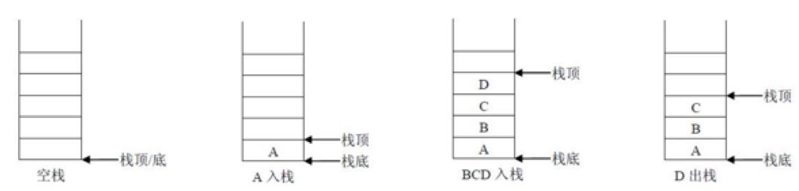
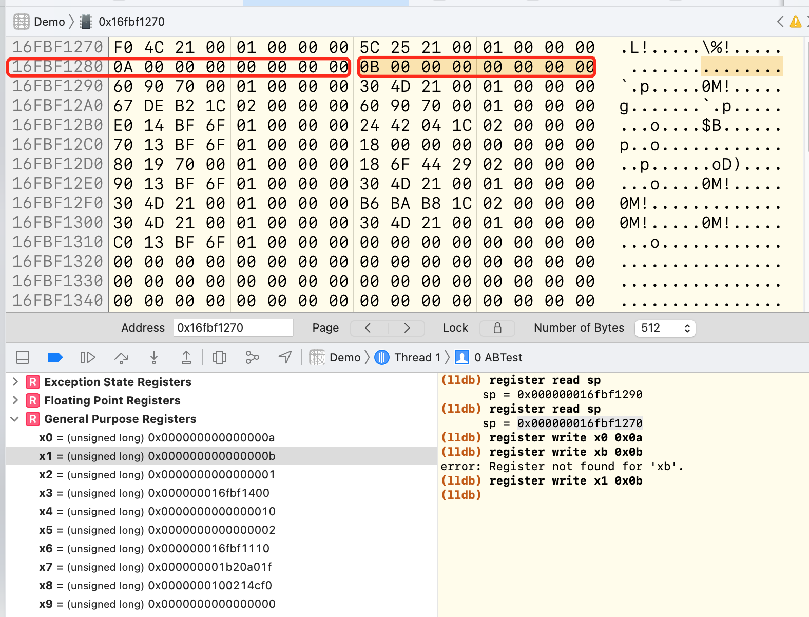

<!DOCTYPE html>
<html lang="zh-CN">
<head>
  <meta charset="UTF-8">
<meta name="viewport" content="width=device-width, initial-scale=1, maximum-scale=2">
<meta name="theme-color" content="#222">
<meta name="generator" content="Hexo 4.2.0">
  <link rel="apple-touch-icon" sizes="180x180" href="/images/apple-touch-icon.png">
  <link rel="icon" type="image/png" sizes="32x32" href="/images/favicon-32x32.png">
  <link rel="icon" type="image/png" sizes="16x16" href="/images/favicon-16x16.png">
  <link rel="mask-icon" href="/images/logo.svg" color="#222">
  <meta name="google-site-verification" content="3WOMyh0YrdEECGDv2GOACbgBEtVz_dJbyA_2G-pjr28">

<link rel="stylesheet" href="/css/main.css">


<link rel="stylesheet" href="/lib/font-awesome/css/font-awesome.min.css">

<script id="hexo-configurations">
    var NexT = window.NexT || {};
    var CONFIG = {"hostname":"liujiaboy.github.io","root":"/","scheme":"Pisces","version":"7.7.2","exturl":false,"sidebar":{"position":"left","display":"post","padding":18,"offset":12,"onmobile":false},"copycode":{"enable":false,"show_result":false,"style":null},"back2top":{"enable":true,"sidebar":false,"scrollpercent":false},"bookmark":{"enable":false,"color":"#222","save":"auto"},"fancybox":false,"mediumzoom":false,"lazyload":false,"pangu":false,"comments":{"style":"tabs","active":null,"storage":true,"lazyload":false,"nav":null},"algolia":{"hits":{"per_page":10},"labels":{"input_placeholder":"Search for Posts","hits_empty":"We didn't find any results for the search: ${query}","hits_stats":"${hits} results found in ${time} ms"}},"localsearch":{"enable":false,"trigger":"auto","top_n_per_article":1,"unescape":false,"preload":false},"motion":{"enable":true,"async":false,"transition":{"post_block":"fadeIn","post_header":"slideDownIn","post_body":"slideDownIn","coll_header":"slideLeftIn","sidebar":"slideUpIn"}}};
  </script>

  <meta name="description" content="1. 关于CPU的补充1.1 寄存器CPU除了有控制器、运算器还有寄存器。其中寄存器的作用就是进行数据的临时存储。  CPU的运算速度是非常快的，为了性能CPU在内部开辟一小块临时存储区域，并在进行运算时先将数据从内存复制到这一小块临时存储区域中，运算时就在这一小快临时存储区域内进行。我们称这一小块临时存储区域为寄存器。  对于arm64系的CPU来说， 如果寄存器以x开头则表明的是一个64位的寄">
<meta property="og:type" content="article">
<meta property="og:title" content="ARM汇编-2 函数">
<meta property="og:url" content="http://liujiaboy.github.io/2021/04/13/%E9%80%86%E5%90%91/ARM%E6%B1%87%E7%BC%96-2/index.html">
<meta property="og:site_name" content="不会飞的小白">
<meta property="og:description" content="1. 关于CPU的补充1.1 寄存器CPU除了有控制器、运算器还有寄存器。其中寄存器的作用就是进行数据的临时存储。  CPU的运算速度是非常快的，为了性能CPU在内部开辟一小块临时存储区域，并在进行运算时先将数据从内存复制到这一小块临时存储区域中，运算时就在这一小快临时存储区域内进行。我们称这一小块临时存储区域为寄存器。  对于arm64系的CPU来说， 如果寄存器以x开头则表明的是一个64位的寄">
<meta property="og:locale" content="zh_CN">
<meta property="og:image" content="http://liujiaboy.github.io/2021/04/13/%E9%80%86%E5%90%91/ARM%E6%B1%87%E7%BC%96-2/stack.jpg">
<meta property="og:image" content="http://liujiaboy.github.io/2021/04/13/%E9%80%86%E5%90%91/ARM%E6%B1%87%E7%BC%96-2/stack_1.jpg">
<meta property="og:image" content="http://liujiaboy.github.io/2021/04/13/%E9%80%86%E5%90%91/ARM%E6%B1%87%E7%BC%96-2/ABTest.jpg">
<meta property="og:image" content="http://liujiaboy.github.io/2021/04/13/%E9%80%86%E5%90%91/ARM%E6%B1%87%E7%BC%96-2/viewdidload.jpg">
<meta property="article:published_time" content="2021-04-13T13:52:51.000Z">
<meta property="article:modified_time" content="2021-05-10T08:35:30.518Z">
<meta property="article:author" content="不会飞的小白">
<meta property="article:tag" content="ARM汇编">
<meta name="twitter:card" content="summary">
<meta name="twitter:image" content="http://liujiaboy.github.io/2021/04/13/%E9%80%86%E5%90%91/ARM%E6%B1%87%E7%BC%96-2/stack.jpg">

<link rel="canonical" href="http://liujiaboy.github.io/2021/04/13/%E9%80%86%E5%90%91/ARM%E6%B1%87%E7%BC%96-2/">


<script id="page-configurations">
  // https://hexo.io/docs/variables.html
  CONFIG.page = {
    sidebar: "",
    isHome : false,
    isPost : true
  };
</script>

  <title>ARM汇编-2 函数 | 不会飞的小白</title>
  


  <noscript>
  <style>
  .use-motion .brand,
  .use-motion .menu-item,
  .sidebar-inner,
  .use-motion .post-block,
  .use-motion .pagination,
  .use-motion .comments,
  .use-motion .post-header,
  .use-motion .post-body,
  .use-motion .collection-header { opacity: initial; }

  .use-motion .site-title,
  .use-motion .site-subtitle {
    opacity: initial;
    top: initial;
  }

  .use-motion .logo-line-before i { left: initial; }
  .use-motion .logo-line-after i { right: initial; }
  </style>
</noscript>

<link rel="alternate" href="/atom.xml" title="不会飞的小白" type="application/atom+xml">
</head>

<body itemscope itemtype="http://schema.org/WebPage">
  <div class="container use-motion">
    <div class="headband"></div>

    <header class="header" itemscope itemtype="http://schema.org/WPHeader">
      <div class="header-inner"><div class="site-brand-container">
  <div class="site-nav-toggle">
    <div class="toggle" aria-label="切换导航栏">
      <span class="toggle-line toggle-line-first"></span>
      <span class="toggle-line toggle-line-middle"></span>
      <span class="toggle-line toggle-line-last"></span>
    </div>
  </div>

  <div class="site-meta">

    <div>
      <a href="/" class="brand" rel="start">
        <span class="logo-line-before"><i></i></span>
        <span class="site-title">不会飞的小白</span>
        <span class="logo-line-after"><i></i></span>
      </a>
    </div>
        <p class="site-subtitle">Stay Hungry, Stay Foolish</p>
  </div>

  <div class="site-nav-right">
    <div class="toggle popup-trigger">
    </div>
  </div>
</div>


<nav class="site-nav">
  
  <ul id="menu" class="menu">
        <li class="menu-item menu-item-home">

    <a href="/" rel="section"><i class="fa fa-fw fa-home"></i>首页</a>

  </li>
        <li class="menu-item menu-item-about">

    <a href="/about/" rel="section"><i class="fa fa-fw fa-user"></i>关于</a>

  </li>
        <li class="menu-item menu-item-tags">

    <a href="/tags/" rel="section"><i class="fa fa-fw fa-tags"></i>标签</a>

  </li>
        <li class="menu-item menu-item-categories">

    <a href="/categories/" rel="section"><i class="fa fa-fw fa-th"></i>分类</a>

  </li>
        <li class="menu-item menu-item-archives">

    <a href="/archives/" rel="section"><i class="fa fa-fw fa-archive"></i>归档</a>

  </li>
  </ul>

</nav>
</div>
    </header>

    
  <div class="back-to-top">
    <i class="fa fa-arrow-up"></i>
    <span>0%</span>
  </div>
  <div class="reading-progress-bar"></div>

  <a href="https://github.com/liujiaboy" class="github-corner" title="Follow me on GitHub" aria-label="Follow me on GitHub" rel="noopener" target="_blank"><svg width="80" height="80" viewBox="0 0 250 250" aria-hidden="true"><path d="M0,0 L115,115 L130,115 L142,142 L250,250 L250,0 Z"></path><path d="M128.3,109.0 C113.8,99.7 119.0,89.6 119.0,89.6 C122.0,82.7 120.5,78.6 120.5,78.6 C119.2,72.0 123.4,76.3 123.4,76.3 C127.3,80.9 125.5,87.3 125.5,87.3 C122.9,97.6 130.6,101.9 134.4,103.2" fill="currentColor" style="transform-origin: 130px 106px;" class="octo-arm"></path><path d="M115.0,115.0 C114.9,115.1 118.7,116.5 119.8,115.4 L133.7,101.6 C136.9,99.2 139.9,98.4 142.2,98.6 C133.8,88.0 127.5,74.4 143.8,58.0 C148.5,53.4 154.0,51.2 159.7,51.0 C160.3,49.4 163.2,43.6 171.4,40.1 C171.4,40.1 176.1,42.5 178.8,56.2 C183.1,58.6 187.2,61.8 190.9,65.4 C194.5,69.0 197.7,73.2 200.1,77.6 C213.8,80.2 216.3,84.9 216.3,84.9 C212.7,93.1 206.9,96.0 205.4,96.6 C205.1,102.4 203.0,107.8 198.3,112.5 C181.9,128.9 168.3,122.5 157.7,114.1 C157.9,116.9 156.7,120.9 152.7,124.9 L141.0,136.5 C139.8,137.7 141.6,141.9 141.8,141.8 Z" fill="currentColor" class="octo-body"></path></svg></a>


    <main class="main">
      <div class="main-inner">
        <div class="content-wrap">
          

          <div class="content">
            

  <div class="posts-expand">
      
  
  
  <article itemscope itemtype="http://schema.org/Article" class="post-block " lang="zh-CN">
    <link itemprop="mainEntityOfPage" href="http://liujiaboy.github.io/2021/04/13/%E9%80%86%E5%90%91/ARM%E6%B1%87%E7%BC%96-2/">

    <span hidden itemprop="author" itemscope itemtype="http://schema.org/Person">
      <meta itemprop="image" content="/images/avatar.jpg">
      <meta itemprop="name" content="不会飞的小白">
      <meta itemprop="description" content="一只iOS程序猿，会陆陆续续的把之前的一些总结搬到这里。">
    </span>

    <span hidden itemprop="publisher" itemscope itemtype="http://schema.org/Organization">
      <meta itemprop="name" content="不会飞的小白">
    </span>
      <header class="post-header">
        <h1 class="post-title" itemprop="name headline">
          ARM汇编-2 函数
        </h1>

        <div class="post-meta">
            <span class="post-meta-item">
              <span class="post-meta-item-icon">
                <i class="fa fa-calendar-o"></i>
              </span>
              <span class="post-meta-item-text">发表于</span>

              <time title="创建时间：2021-04-13 21:52:51" itemprop="dateCreated datePublished" datetime="2021-04-13T21:52:51+08:00">2021-04-13</time>
            </span>
              <span class="post-meta-item">
                <span class="post-meta-item-icon">
                  <i class="fa fa-calendar-check-o"></i>
                </span>
                <span class="post-meta-item-text">更新于</span>
                <time title="修改时间：2021-05-10 16:35:30" itemprop="dateModified" datetime="2021-05-10T16:35:30+08:00">2021-05-10</time>
              </span>
            <span class="post-meta-item">
              <span class="post-meta-item-icon">
                <i class="fa fa-folder-o"></i>
              </span>
              <span class="post-meta-item-text">分类于</span>
                <span itemprop="about" itemscope itemtype="http://schema.org/Thing">
                  <a href="/categories/%E9%80%86%E5%90%91/" itemprop="url" rel="index"><span itemprop="name">逆向</span></a>
                </span>
            </span>

          
            <span class="post-meta-item" title="阅读次数" id="busuanzi_container_page_pv" style="display: none;">
              <span class="post-meta-item-icon">
                <i class="fa fa-eye"></i>
              </span>
              <span class="post-meta-item-text">阅读次数：</span>
              <span id="busuanzi_value_page_pv"></span>
            </span>

        </div>
      </header>

    
    
    
    <div class="post-body" itemprop="articleBody">

      
        <h1 id="1-关于CPU的补充"><a href="#1-关于CPU的补充" class="headerlink" title="1. 关于CPU的补充"></a>1. 关于CPU的补充</h1><h2 id="1-1-寄存器"><a href="#1-1-寄存器" class="headerlink" title="1.1 寄存器"></a>1.1 寄存器</h2><p>CPU除了有控制器、运算器还有寄存器。其中寄存器的作用就是进行数据的临时存储。</p>
<blockquote>
<p>CPU的运算速度是非常快的，为了性能CPU在内部开辟一小块临时存储区域，并在进行运算时先将数据从内存复制到这一小块临时存储区域中，运算时就在这一小快临时存储区域内进行。我们称这一小块临时存储区域为寄存器。</p>
</blockquote>
<p>对于arm64系的CPU来说， 如果寄存器以x开头则表明的是一个64位的寄存器，如果以w开头则表明是一个32位的寄存器，在系统中没有提供16位和8位的寄存器供访问和使用。其中32位的寄存器是64位寄存器的低32位部分并不是独立存在的。</p>
<h2 id="1-2-高速缓存"><a href="#1-2-高速缓存" class="headerlink" title="1.2 高速缓存"></a>1.2 高速缓存</h2><p>iPhoneX上搭载的ARM处理器A11它的1级缓存的容量是64KB，2级缓存的容量8M.</p>
<blockquote>
<p>CPU每执行一条指令前都需要从内存中将指令读取到CPU内并执行。而寄存器的运行速度相比内存读写要快很多,为了性能,CPU还集成了一个高速缓存存储区域.当程序在运行时，先将要执行的指令代码以及数据复制到高速缓存中去(由操作系统完成).CPU直接从高速缓存依次读取指令来执行.</p>
</blockquote>
<h2 id="1-3-寄存器"><a href="#1-3-寄存器" class="headerlink" title="1.3 寄存器"></a>1.3 寄存器</h2><h3 id="1-3-1-数据地址寄存器"><a href="#1-3-1-数据地址寄存器" class="headerlink" title="1.3.1 数据地址寄存器"></a>1.3.1 数据地址寄存器</h3><p>数据地址寄存器通常用来做数据计算的临时存储、做累加、计数、地址保存等功能。定义这些寄存器的作用主要是用于在CPU指令中保存操作数，在CPU中当做一些常规变量来使用。<br>ARM64中：</p>
<ul>
<li>64位 x0-x30，XZR（零寄存器）</li>
<li>32位 w0-w30，WZR（零寄存器）</li>
</ul>
<h3 id="1-3-2-浮点和向量寄存器"><a href="#1-3-2-浮点和向量寄存器" class="headerlink" title="1.3.2. 浮点和向量寄存器"></a>1.3.2. 浮点和向量寄存器</h3><p>因为浮点数的存储以及其运算的特殊性，CPU中专门提供浮点数寄存器来处理浮点数。</p>
<ul>
<li>64位: d0-d31 </li>
<li>32位: d0-d31</li>
</ul>
<p>现在的CPU支持向量运算.(向量运算在图形处理相关的领域用得非常的多)为了支持向量计算系统了也提供了众多的向量寄存器.</p>
<p>向量寄存器 128位:V0-V31</p>
<h3 id="1-3-3-SP、FP寄存器"><a href="#1-3-3-SP、FP寄存器" class="headerlink" title="1.3.3 SP、FP寄存器"></a>1.3.3 SP、FP寄存器</h3><p>说这两个，需要先说一下栈。</p>
<p></p>
<p>栈是一种具有特殊的访问方式的存储空间，先进后处，后进先出。（Last In Out First）</p>
<ul>
<li>sp寄存器在任意时刻会保存栈顶的地址。</li>
<li>fp寄存器也成为x29寄存器。属于通用寄存器，在默写时刻我们利用它保存栈底的地址。</li>
</ul>
<blockquote>
<p>需要注意的是，ARM64里面对栈的操作是16个字节对齐的。</p>
</blockquote>
<p></p>
<p>这个图很好的说明了栈是从高地址往低地址开始读写操作的，堆是从低地址向高地址开始的，当栈不断的开辟空间，堆也不断的开辟空间，导致两个区域重叠，就会导致崩溃。也就是常说的堆栈溢出。（堆、栈上的空间是不固定的）</p>
<p>这里我们说个题外话，是不是所有的死循环都会导致崩溃？答案是否定的，只有不断的开辟空间的死循环才会导致崩溃，上一章我们最后的例子就是很好的说明，因为没有开辟空间。</p>
<h1 id="2-函数调用栈"><a href="#2-函数调用栈" class="headerlink" title="2. 函数调用栈"></a>2. 函数调用栈</h1><p>以下代码是常见的函数调用开辟和恢复栈空间。</p>
<figure class="highlight plain"><table><tr><td class="gutter"><pre><span class="line">1</span><br><span class="line">2</span><br><span class="line">3</span><br><span class="line">4</span><br><span class="line">5</span><br><span class="line">6</span><br><span class="line">7</span><br></pre></td><td class="code"><pre><span class="line">sub    sp, sp, #0x40             ; 拉伸0x40（64字节）空间</span><br><span class="line">stp    x29, x30, [sp, #0x30]     ; x29, x30 寄存器入栈保护</span><br><span class="line">add    x29, sp, #0x30            ; x29指向栈帧的底部</span><br><span class="line">... </span><br><span class="line">ldp    x29, x30, [sp, #0x30]     ; 恢复x29&#x2F;x30 寄存器的值</span><br><span class="line">add    sp, sp, #0x40             ; 栈平衡</span><br><span class="line">ret</span><br></pre></td></tr></table></figure>
<blockquote>
<p>这里需要注意的是： 读、写数据都是往高地址读、写。</p>
</blockquote>
<h2 id="2-1-内存读写指令"><a href="#2-1-内存读写指令" class="headerlink" title="2.1 内存读写指令"></a>2.1 内存读写指令</h2><ul>
<li>str指令：store register，将数据从寄存器中读出来，存在内存中。每次操作8个字节</li>
<li>ldr指令：load register，将数据从内存中读出来，存在寄存器中。每次操作8个字节</li>
<li>stp指令：str指令的变种，每次操作16个字节。</li>
<li>ldp指令：ldr指令的变种，每次操作16个字节。</li>
</ul>
<h2 id="2-2-堆栈操作"><a href="#2-2-堆栈操作" class="headerlink" title="2.2 堆栈操作"></a>2.2 堆栈操作</h2><figure class="highlight plain"><table><tr><td class="gutter"><pre><span class="line">1</span><br><span class="line">2</span><br><span class="line">3</span><br><span class="line">4</span><br><span class="line">5</span><br><span class="line">6</span><br></pre></td><td class="code"><pre><span class="line">_ABTest:</span><br><span class="line">    sub sp, sp, #0x20       ; 开辟栈空间，在当前sp所在的位置减去32个字节。</span><br><span class="line">    stp x0, x1, [sp, #0x10] ; 之所以用[],是因为sp存的是一个地址,这里的操作是寻址，把x0，x1的值放在对应的位置，但是栈的读写都是在高位，所以这里还需要加上一个值，写在高位</span><br><span class="line">    ldp x1, x0, [sp, #0x10] ; 这里是交换x0，x1的值。注意，当前的操作不会改变sp的值，寄存器中的值进行交换</span><br><span class="line">    add sp, sp, #0x20       ; 这里恢复栈空间。</span><br><span class="line">    ret</span><br></pre></td></tr></table></figure>

<ol>
<li>我们将上面的代码放在“.s”文件中，在ViewControler中声明<code>int ABTest();</code>方法.</li>
<li>在viewDidLoad中调用<code>ABTest();</code>，并在这一行打上断点。运行触发断点之后，按住ctrl键的同时点击小箭头，进入汇编，（按住ctrl是为了不让程序执行下一步）</li>
<li>在右下命令行中输入<code>register read sp</code>查看当前sp所在的位置，是<code>sp = 0x000000016fbf1290</code></li>
<li>点击下一步，开辟栈空间，重复第3步的操作，查看<code>sp = 0x000000016fbf1270</code></li>
<li>进入View Memory，定位到sp所在的位置，查看在<code>0x000000016fbf1280</code>位置的值是什么。</li>
<li>这个时候，分别执行<code>register write x0 0x0a</code>， <code>register write x1 0x0b</code>，修改x0，x1的值，执行下一步。</li>
<li>发现在左边通用寄存器中x0，x1的值已经发生变化。这时候重复第5步操作。查看是否已经发生变化。（需要切换页）</li>
<li>执行下一步，交换x0，x1的值。我们发现左边，通用寄存器中x0，x1的值已经发生了变化，这时候重复第5步，查看内存中的值是否有变化？是没有发生变化的哈~</li>
<li>销毁当前栈空间。重复第3步，查看当前sp的地址。是<code>sp = 0x000000016fbf1290</code></li>
</ol>
<p>如图：</p>
<p></p>
<h1 id="3-bl和ret指令"><a href="#3-bl和ret指令" class="headerlink" title="3. bl和ret指令"></a>3. bl和ret指令</h1><h2 id="3-1-bl"><a href="#3-1-bl" class="headerlink" title="3.1 bl"></a>3.1 bl</h2><p>bl其实存在两个操作：</p>
<ol>
<li>将下一条指令的地址放入lr（x30）寄存器。也就是保存回家的路。</li>
<li>转到对应的跳转中执行指令，当指令执行完成后，会根据lr中的地址，返回继续执行。</li>
</ol>
<p>通俗的讲就是离家出走了，执行ret的时候，根据lr中的地址，找到回家的路。</p>
<h2 id="3-2-ret"><a href="#3-2-ret" class="headerlink" title="3.2 ret"></a>3.2 ret</h2><p>默认使用lr（x30）寄存器的值，通过底层指令提示CPU此处作为下条指令地址。这是ARM64平台的特色指令，它面向硬件方面做了优化处理。</p>
<h2 id="3-3-x30寄存器（lr寄存器）"><a href="#3-3-x30寄存器（lr寄存器）" class="headerlink" title="3.3 x30寄存器（lr寄存器）"></a>3.3 x30寄存器（lr寄存器）</h2><p>x30寄存器存放的是函数的返回地址，当ret指令执行时，会寻找x30寄存器保存的地址值。</p>
<p>这也就是，为啥上一章，最后的代码会造成循环引用的原因，因为x30寄存器的地址指向的就是当前bl的下一行代码。</p>
<h2 id="3-4-操作"><a href="#3-4-操作" class="headerlink" title="3.4 操作"></a>3.4 操作</h2><p>我们简写一下上一章的代码</p>
<figure class="highlight plain"><table><tr><td class="gutter"><pre><span class="line">1</span><br><span class="line">2</span><br><span class="line">3</span><br><span class="line">4</span><br><span class="line">5</span><br><span class="line">6</span><br><span class="line">7</span><br><span class="line">8</span><br><span class="line">9</span><br></pre></td><td class="code"><pre><span class="line">_A:</span><br><span class="line">    mov x0, 0xaa</span><br><span class="line">    bl _B</span><br><span class="line">    mov x0, 0xaa</span><br><span class="line">    ret</span><br><span class="line"></span><br><span class="line">_B:</span><br><span class="line">    mov x0, #0xbb</span><br><span class="line">    ret</span><br></pre></td></tr></table></figure>

<ol>
<li><p>在ViewDidLoad中执行A()，并打断点。执行上面的代码。按住ctrl键点击小剪头，进入A的汇编。查看当前lr寄存器中存放的地址是谁。然后按照下图所示进行操作，进入ViewDidLoad的汇编。</p>
<p> </p>
</li>
<li><p>我们看到了19行执行了 bl A的操作，也就是在ViewDidLoad中执行A()操作。而lr寄存器所存储的地址就是第20行所在的位置，也就是存储了执行A之后返回ViewDidLoad的地址。0x1003ce56c</p>
</li>
<li><p>点击继续执行，修改x0寄存器的值，继续下一步。执行bl B</p>
</li>
<li><p>这时候我们发现lr寄存器中存储的值已经被修改了，变成了A汇编代码中bl B下一行的地址。<code>lr = 0x1003ce904</code>，这里修改了x0的值。</p>
</li>
<li><p>下一步。继续执行B中的ret操作，发现回到了A，回到了<code>0x1003ce904</code>，继续执行发现修改了x0的值。</p>
</li>
<li><p>下一步，执行ret，发现又回到了A中的<code>0x1003ce904</code>，不断的执行，发现压根回不去ViewDidLoad了。</p>
</li>
</ol>
<p>这就是上一章中说的问题，lr寄存器的值被修改了，导致回不去了。那我们应该怎么处理呢？</p>
<p>最合理的方案是在执行bl操作之前，将bl的下一行地址存放在栈中。如果将值存放在其他寄存器中是绝对不安全的，因为你不知道什么时候就会被系统覆盖。</p>
<h3 id="3-4-1-解决死循环"><a href="#3-4-1-解决死循环" class="headerlink" title="3.4.1 解决死循环"></a>3.4.1 解决死循环</h3><p>我们为了解决上面的问题，我们查看系统是怎么处理这个问题的。</p>
<figure class="highlight plain"><table><tr><td class="gutter"><pre><span class="line">1</span><br><span class="line">2</span><br><span class="line">3</span><br><span class="line">4</span><br><span class="line">5</span><br><span class="line">6</span><br><span class="line">7</span><br><span class="line">8</span><br></pre></td><td class="code"><pre><span class="line">void c() &#123;</span><br><span class="line">    d();</span><br><span class="line">    return;</span><br><span class="line">&#125;</span><br><span class="line"></span><br><span class="line">void d() &#123;</span><br><span class="line"></span><br><span class="line">&#125;</span><br></pre></td></tr></table></figure>

<p>同样，在ViewDidLoad中执行<code>c()</code>。</p>
<figure class="highlight plain"><table><tr><td class="gutter"><pre><span class="line">1</span><br><span class="line">2</span><br><span class="line">3</span><br><span class="line">4</span><br><span class="line">5</span><br><span class="line">6</span><br></pre></td><td class="code"><pre><span class="line">Demo&#96;c:</span><br><span class="line">-&gt;  0x1005464e0 &lt;+0&gt;:  stp    x29, x30, [sp, #-0x10]!</span><br><span class="line">    0x1005464e4 &lt;+4&gt;:  mov    x29, sp</span><br><span class="line">    0x1005464e8 &lt;+8&gt;:  bl     0x1005464f4               ; d at ViewController.m:38:1</span><br><span class="line">    0x1005464ec &lt;+12&gt;: ldp    x29, x30, [sp], #0x10</span><br><span class="line">    0x1005464f0 &lt;+16&gt;: ret</span><br></pre></td></tr></table></figure>
<p>在c的汇编里头，我们仔细看下系统是什么处理lr寄存器的。<br>我们看到了x29和x30两个寄存器。x29是fp寄存器，指向栈底；x30寄存器就是lr寄存器。</p>
<ol>
<li><code>stp x29, x30, [sp, #-0x10]!</code> 这是汇编代码简写的形式的。这句话的意思是sp -= 0x10开辟空间，把x29和x30寄存器的值存放在开辟的空间里。“!”的操作是针对sp的，“[]”的操作是针对x29，x30寻址的。需要注意的是，先存值，在改变sp。</li>
<li><code>mov x29, sp</code> 将sp的值赋给x29寄存器。啥意思，fp跟sp指向相同的位置。栈顶栈底指向同一位置，啥情况？之后说哈~</li>
<li>bl操作，执行d()</li>
<li><code>ldp x29, x30, [sp], #0x10</code> 跟第一句差不多，“[]”就是寻址，将sp对应的两个地址的值赋值给x29，x30。第一步是存，这一步是取。然后执行 sp += 0x10的操作，释放栈空间。</li>
<li>执行ret操作，我们就能轻松的回到ViewDidLoad了。因为lr寄存器中的地址正是我们一开始存的值。</li>
</ol>
<p>在执行的过程中，我们一步步查看lr寄存器的值看是怎么变化的。就能清晰明了了。</p>
<p>这个时候，我们就可以修改上面的代码了</p>
<figure class="highlight plain"><table><tr><td class="gutter"><pre><span class="line">1</span><br><span class="line">2</span><br><span class="line">3</span><br><span class="line">4</span><br><span class="line">5</span><br><span class="line">6</span><br><span class="line">7</span><br><span class="line">8</span><br><span class="line">9</span><br><span class="line">10</span><br><span class="line">11</span><br></pre></td><td class="code"><pre><span class="line">_A:</span><br><span class="line">    str x30, [sp, #-0x10]!  ;仿造系统方法，因为x29寄存器暂时没有用处，所以只使用x30。</span><br><span class="line">    mov x0, 0xaa</span><br><span class="line">    bl _B</span><br><span class="line">    mov x0, 0xaa</span><br><span class="line">    ldr x30, [sp], #0x10</span><br><span class="line">    ret</span><br><span class="line"></span><br><span class="line">_B:</span><br><span class="line">    mov x0, #0xbb</span><br><span class="line">    ret</span><br></pre></td></tr></table></figure>

<p>执行该代码，我们按照栈操作3.4的流程，查看整体流程，看x30寄存器存放读取的过程，配合View Memory使用会更爽哈~</p>
<p>这里把代码做一下修改，在A中<code>str x30, [sp, #-0x8]!</code>将16个字节改成8个字节会怎样？跑一遍试试看</p>
<p>会发生crash对不对。<b>因为在ARM64里面，对栈的操作是16个字节对齐的。所以开辟空间操作一定是16字节的倍数来进行的。</b></p>
<h1 id="4-函数的参数和返回值"><a href="#4-函数的参数和返回值" class="headerlink" title="4. 函数的参数和返回值"></a>4. 函数的参数和返回值</h1><p>ARM64下，函数的参数是存放在x0-x7(32位w0-w7)这个8个寄存器里面的。如果超过8个参数，就会入栈。<br>函数的返回值是放在x0(32位是w0)寄存器里的。</p>
<p>这里有一个点，在OC中，一般情况下，定义函数最多可以有几个参数？这里有一个小坑哈~<br>在runtime里，我们知道，函数调用都是通过objc_msgsend来处理的，而这里个里头已经存在了两个默认参数，一个是self，一个obj</p>
<p>当我们不知道怎么处理带参数的函数时，就看系统是怎么实现的。</p>
<figure class="highlight plain"><table><tr><td class="gutter"><pre><span class="line">1</span><br><span class="line">2</span><br><span class="line">3</span><br><span class="line">4</span><br></pre></td><td class="code"><pre><span class="line">&#x2F;&#x2F;&#x2F; 我们定义一个函数，在viewDidLoad中执行。</span><br><span class="line">int sumA(int a, int b) &#123;</span><br><span class="line">    return a + b;</span><br><span class="line">&#125;</span><br></pre></td></tr></table></figure>

<p>执行之后，按住control点击进汇编：</p>
<figure class="highlight plain"><table><tr><td class="gutter"><pre><span class="line">1</span><br><span class="line">2</span><br><span class="line">3</span><br><span class="line">4</span><br><span class="line">5</span><br><span class="line">6</span><br><span class="line">7</span><br><span class="line">8</span><br><span class="line">9</span><br><span class="line">10</span><br><span class="line">11</span><br><span class="line">12</span><br><span class="line">13</span><br><span class="line">14</span><br><span class="line">15</span><br><span class="line">16</span><br><span class="line">17</span><br><span class="line">18</span><br><span class="line">19</span><br><span class="line">20</span><br></pre></td><td class="code"><pre><span class="line">首先我们来到viewDidLoad中，</span><br><span class="line">&#96;-[ViewController viewDidLoad]:</span><br><span class="line">    ; 这里我们有看到赋值，sumA(10+20)，我们看到w0&#x3D;10，w1&#x3D;20</span><br><span class="line">    0x104d125d4 &lt;+68&gt;: mov    w0, #0xa          </span><br><span class="line">    0x104d125d8 &lt;+72&gt;: mov    w1, #0x14</span><br><span class="line">-&gt;  0x104d125dc &lt;+76&gt;: bl     0x104d12570               ; sumA at ViewController.m:16  ; 这里有bl指令，继续执行跳转到sumA操作。</span><br><span class="line">    0x104d125e0 &lt;+80&gt;: ldp    x29, x30, [sp, #0x20]</span><br><span class="line">    0x104d125e4 &lt;+84&gt;: add    sp, sp, #0x30             ; &#x3D;0x30 </span><br><span class="line">    0x104d125e8 &lt;+88&gt;: ret    </span><br><span class="line">    </span><br><span class="line">---------------------------------------------------------------------</span><br><span class="line">FunctionDemo&#96;sumA:</span><br><span class="line">-&gt;  0x100d3a4dc &lt;+0&gt;:  sub    sp, sp, #0x10     ; 开辟16个字节的空间</span><br><span class="line">    0x100d3a4e0 &lt;+4&gt;:  str    w0, [sp, #0xc]    ; 寻址把w0存放在sp+0xC的位置</span><br><span class="line">    0x100d3a4e4 &lt;+8&gt;:  str    w1, [sp, #0x8]    ; 寻址把w1存放在sp+0x8的位置</span><br><span class="line">    0x100d3a4e8 &lt;+12&gt;: ldr    w8, [sp, #0xc]    ; 把sp+0xC位置的值给w8</span><br><span class="line">    0x100d3a4ec &lt;+16&gt;: ldr    w9, [sp, #0x8]    ; 把sp+0x8位置的值给w9</span><br><span class="line">    0x100d3a4f0 &lt;+20&gt;: add    w0, w8, w9        ; 执行加法操作，并赋值给w0</span><br><span class="line">    0x100d3a4f4 &lt;+24&gt;: add    sp, sp, #0x10     ; 释放栈空间</span><br><span class="line">    0x100d3a4f8 &lt;+28&gt;: ret                      ; ret</span><br></pre></td></tr></table></figure>

<p>通过上面汇编之后的代码，我们可以看到整个的流程，相当于生成了两个临时量变去存储传进来的值，然后把返回值存储在w0寄存器里。</p>
<figure class="highlight plain"><table><tr><td class="gutter"><pre><span class="line">1</span><br><span class="line">2</span><br><span class="line">3</span><br><span class="line">4</span><br><span class="line">5</span><br><span class="line">6</span><br></pre></td><td class="code"><pre><span class="line">&#x2F;&#x2F;&#x2F; 我们定义一个函数，在viewDidLoad中执行。</span><br><span class="line">int sumA(int a, int b) &#123;</span><br><span class="line">    int a1 &#x3D; 1;     &#x2F;&#x2F; 生成局部变量a1，b1</span><br><span class="line">    int b1 &#x3D; b;</span><br><span class="line">    return a1 + b1;</span><br><span class="line">&#125;</span><br></pre></td></tr></table></figure>

<p>通过上面系统的实现方案，我们就可以自己写一个带有参数，返回值的方法。在“.s”文件中实现</p>
<figure class="highlight plain"><table><tr><td class="gutter"><pre><span class="line">1</span><br><span class="line">2</span><br><span class="line">3</span><br><span class="line">4</span><br><span class="line">5</span><br></pre></td><td class="code"><pre><span class="line">.global _sumB</span><br><span class="line"></span><br><span class="line">_sumB:</span><br><span class="line">    add x0, x0, x1</span><br><span class="line">    ret</span><br></pre></td></tr></table></figure>

<h2 id="4-2-验证超过8个参数的情况"><a href="#4-2-验证超过8个参数的情况" class="headerlink" title="4.2 验证超过8个参数的情况"></a>4.2 验证超过8个参数的情况</h2><p>多余的参数会存放在调用方法所在的栈空间里，然后在调用的方法里去取别人的栈中存放的参数。</p>
<figure class="highlight plain"><table><tr><td class="gutter"><pre><span class="line">1</span><br><span class="line">2</span><br><span class="line">3</span><br><span class="line">4</span><br><span class="line">5</span><br><span class="line">6</span><br><span class="line">7</span><br><span class="line">8</span><br></pre></td><td class="code"><pre><span class="line">int test(int a, int b, int c, int d, int e, int f, int g, int h, int i) &#123;</span><br><span class="line">    return a+b+c+d+e+f+g+h+i;</span><br><span class="line">&#125;</span><br><span class="line"></span><br><span class="line">- (void)viewDidLoad &#123;</span><br><span class="line">    [super viewDidLoad];</span><br><span class="line">    test(1,2,3,4,5,6,7,8,9);</span><br><span class="line">&#125;</span><br></pre></td></tr></table></figure>

<p>执行代码，我们看汇编之后的代码：</p>
<figure class="highlight plain"><table><tr><td class="gutter"><pre><span class="line">1</span><br><span class="line">2</span><br><span class="line">3</span><br><span class="line">4</span><br><span class="line">5</span><br><span class="line">6</span><br><span class="line">7</span><br><span class="line">8</span><br><span class="line">9</span><br><span class="line">10</span><br><span class="line">11</span><br><span class="line">12</span><br><span class="line">13</span><br><span class="line">14</span><br><span class="line">15</span><br><span class="line">16</span><br><span class="line">17</span><br><span class="line">18</span><br><span class="line">19</span><br><span class="line">20</span><br><span class="line">21</span><br><span class="line">22</span><br><span class="line">23</span><br><span class="line">24</span><br></pre></td><td class="code"><pre><span class="line">&#96;-[ViewController viewDidLoad]:</span><br><span class="line">...</span><br><span class="line">... 这中间省略了一大部分代码，我们直接从这里看</span><br><span class="line">    ; 这里打印 sp &#x3D; 0x000000016f4c53c0</span><br><span class="line">    0x10093e594 &lt;+64&gt;:  bl     0x10093e9b4               ; symbol stub for: objc_msgSendSuper2  </span><br><span class="line">    ; 这个是调用super viewDidLoad</span><br><span class="line">    0x10093e598 &lt;+68&gt;:  mov    w0, #0x1     ; 将1存到w0寄存器中</span><br><span class="line">    0x10093e59c &lt;+72&gt;:  mov    w1, #0x2</span><br><span class="line">    0x10093e5a0 &lt;+76&gt;:  mov    w2, #0x3</span><br><span class="line">    0x10093e5a4 &lt;+80&gt;:  mov    w3, #0x4</span><br><span class="line">    0x10093e5a8 &lt;+84&gt;:  mov    w4, #0x5</span><br><span class="line">    0x10093e5ac &lt;+88&gt;:  mov    w5, #0x6</span><br><span class="line">    0x10093e5b0 &lt;+92&gt;:  mov    w6, #0x7     ; 这些值我们是可以在通用寄存器里看到的</span><br><span class="line">    0x10093e5b4 &lt;+96&gt;:  mov    w7, #0x8     ; 将8存到w7寄存器中</span><br><span class="line">    ; x8 &#x3D; 0x0000000100940ce8  &quot;viewDidLoad&quot;</span><br><span class="line">    0x10093e5b8 &lt;+100&gt;: mov    x8, sp       ; 这里是把sp栈顶的位置放在x8寄存器中。</span><br><span class="line">    ; x8 &#x3D; 0x000000016f4c53c0</span><br><span class="line">    0x10093e5bc &lt;+104&gt;: mov    w10, #0x9    ; 把9放在w10寄存器</span><br><span class="line">    0x10093e5c0 &lt;+108&gt;: str    w10, [x8]    ; 把w10寄存器中的值，放在x8寄存器所在的地址里</span><br><span class="line">    ; 也就是在sp的位置，存放了9这个变量。</span><br><span class="line">-&gt;  0x10093e5c4 &lt;+112&gt;: bl     0x10093e4dc               ; sumA at ViewController.m:16      ; 这里执行 sumA</span><br><span class="line">    0x10093e5c8 &lt;+116&gt;: ldp    x29, x30, [sp, #0x30]    ; x29,x30取值，是为了函数返回</span><br><span class="line">    0x10093e5cc &lt;+120&gt;: add    sp, sp, #0x40             ; &#x3D;0x40 ; 释放栈空间</span><br><span class="line">    0x10093e5d0 &lt;+124&gt;: ret</span><br></pre></td></tr></table></figure>

<p>接下来，我们看test的汇编代码情况：</p>
<figure class="highlight plain"><table><tr><td class="gutter"><pre><span class="line">1</span><br><span class="line">2</span><br><span class="line">3</span><br><span class="line">4</span><br><span class="line">5</span><br><span class="line">6</span><br><span class="line">7</span><br><span class="line">8</span><br><span class="line">9</span><br><span class="line">10</span><br><span class="line">11</span><br><span class="line">12</span><br><span class="line">13</span><br><span class="line">14</span><br><span class="line">15</span><br><span class="line">16</span><br><span class="line">17</span><br><span class="line">18</span><br><span class="line">19</span><br><span class="line">20</span><br><span class="line">21</span><br><span class="line">22</span><br><span class="line">23</span><br><span class="line">24</span><br><span class="line">25</span><br><span class="line">26</span><br><span class="line">27</span><br><span class="line">28</span><br><span class="line">29</span><br><span class="line">30</span><br><span class="line">31</span><br><span class="line">32</span><br><span class="line">33</span><br><span class="line">34</span><br></pre></td><td class="code"><pre><span class="line">&#96;test:</span><br><span class="line">    ; 开辟空间之前 sp &#x3D; 0x000000016f4c53c0</span><br><span class="line">-&gt;  0x10093e4dc &lt;+0&gt;:   sub    sp, sp, #0x30 ; &#x3D;0x30</span><br><span class="line">    ; 开辟栈空间后，sp&#x3D;0x000000016f4c5390</span><br><span class="line">    0x10093e4e0 &lt;+4&gt;:   ldr    w8, [sp, #0x30]  ; 这是从sp+0x30的位置取值，放在w8寄存器里。</span><br><span class="line">    ; sp+0x30就是开辟当前栈空间之前的位置，也就是viewDidLoad开辟空间的栈顶位置，这个位置是x8寄存器指向的位置，存放的是变量9</span><br><span class="line">    0x10093e4e4 &lt;+8&gt;:   str    w0, [sp, #0x2c]  ; 把w0寄存器的值存放在栈sp+0x2c里头，也就是sp偏移4个字节，正好存放一个int类型的数据。</span><br><span class="line">    0x10093e4e8 &lt;+12&gt;:  str    w1, [sp, #0x28]</span><br><span class="line">    0x10093e4ec &lt;+16&gt;:  str    w2, [sp, #0x24]</span><br><span class="line">    0x10093e4f0 &lt;+20&gt;:  str    w3, [sp, #0x20]</span><br><span class="line">    0x10093e4f4 &lt;+24&gt;:  str    w4, [sp, #0x1c]</span><br><span class="line">    0x10093e4f8 &lt;+28&gt;:  str    w5, [sp, #0x18]</span><br><span class="line">    0x10093e4fc &lt;+32&gt;:  str    w6, [sp, #0x14]</span><br><span class="line">    0x10093e500 &lt;+36&gt;:  str    w7, [sp, #0x10]</span><br><span class="line">    0x10093e504 &lt;+40&gt;:  str    w8, [sp, #0xc]   ; w8寄存器的值放在sp+0xc里，w8&#x3D;9</span><br><span class="line">    0x10093e508 &lt;+44&gt;:  ldr    w8, [sp, #0x2c]  ; 赋值操作 w8&#x3D;1</span><br><span class="line">    0x10093e50c &lt;+48&gt;:  ldr    w9, [sp, #0x28]  ; w9 &#x3D; 2</span><br><span class="line">    0x10093e510 &lt;+52&gt;:  add    w8, w8, w9       ; w8 &#x3D; w8+w9 &#x3D; 1+2 &#x3D; 3</span><br><span class="line">    0x10093e514 &lt;+56&gt;:  ldr    w9, [sp, #0x24]  ; w9 &#x3D; 3</span><br><span class="line">    0x10093e518 &lt;+60&gt;:  add    w8, w8, w9       ; w8 +&#x3D; w9 &#x3D; 3 + 3</span><br><span class="line">    0x10093e51c &lt;+64&gt;:  ldr    w9, [sp, #0x20]</span><br><span class="line">    0x10093e520 &lt;+68&gt;:  add    w8, w8, w9</span><br><span class="line">    0x10093e524 &lt;+72&gt;:  ldr    w9, [sp, #0x1c]</span><br><span class="line">    0x10093e528 &lt;+76&gt;:  add    w8, w8, w9</span><br><span class="line">    0x10093e52c &lt;+80&gt;:  ldr    w9, [sp, #0x18]</span><br><span class="line">    0x10093e530 &lt;+84&gt;:  add    w8, w8, w9</span><br><span class="line">    0x10093e534 &lt;+88&gt;:  ldr    w9, [sp, #0x14]</span><br><span class="line">    0x10093e538 &lt;+92&gt;:  add    w8, w8, w9</span><br><span class="line">    0x10093e53c &lt;+96&gt;:  ldr    w9, [sp, #0x10]</span><br><span class="line">    0x10093e540 &lt;+100&gt;: add    w8, w8, w9</span><br><span class="line">    0x10093e544 &lt;+104&gt;: ldr    w9, [sp, #0xc]</span><br><span class="line">    0x10093e548 &lt;+108&gt;: add    w0, w8, w9       ; 计算完成</span><br><span class="line">    0x10093e54c &lt;+112&gt;: add    sp, sp, #0x30    ; &#x3D;0x30 ，释放栈空间</span><br><span class="line">    0x10093e550 &lt;+116&gt;: ret</span><br></pre></td></tr></table></figure>

<p>这里会把9这个参数存放在<code>viewDidLoad</code>所开辟的栈空间里。执行test后，1-8会存放在<code>test</code>函数所开辟的空间中，然后把9这个参数从<code>viewDidLoad</code>所开辟的栈空间里拿回来，是通过x8寄存器来定位地址获取9这个参数的。相当于从别人家借东西，会存在sp计算的问题，会影响效率。</p>
<p>我们一定要知道的一点是，栈的读写都是从高位往低位进行读写，栈空间的读写都是基于上述原则进行操作的。<br>以上操作，配合View Memory查看内存中的数据会更清晰。</p>
<h3 id="4-2-1-release下操作"><a href="#4-2-1-release下操作" class="headerlink" title="4.2.1 release下操作"></a>4.2.1 release下操作</h3><p>我们的这一系列操作都是在debug模式下进行的，加法的计算产生的汇编代码竟然是如此繁杂。如果我们切换到release下运行，会有什么情况发生？</p>
<p>在release下，编译器会进行优化，我们的test方法，只是做了调用，没有任何实际意义，所以在release下根本不会有bl指令。</p>
<p>如果我们执行<code>printf(&quot;%d&quot;, sumA(1,2,3,4,5,6,7,8,9));</code>呢？</p>
<p>其实差别不大，经过系统优化之后，就只剩下<code>mov    w8, #0x2d</code>这一句代码了，0x2d = 45。就是这么简单直接。</p>
<h2 id="4-3-验证返回值"><a href="#4-3-验证返回值" class="headerlink" title="4.3 验证返回值"></a>4.3 验证返回值</h2><p>如果返回值超过8个字节，x0寄存器存不下的时候，会通过栈空间来返回。</p>
<figure class="highlight plain"><table><tr><td class="gutter"><pre><span class="line">1</span><br><span class="line">2</span><br><span class="line">3</span><br><span class="line">4</span><br><span class="line">5</span><br><span class="line">6</span><br><span class="line">7</span><br><span class="line">8</span><br><span class="line">9</span><br><span class="line">10</span><br><span class="line">11</span><br><span class="line">12</span><br><span class="line">13</span><br><span class="line">14</span><br><span class="line">15</span><br></pre></td><td class="code"><pre><span class="line">struct NumA getStructA(int a, int b, int c, int d, int e, int f) &#123;</span><br><span class="line">    struct NumA num;</span><br><span class="line">    num.a &#x3D; a;</span><br><span class="line">    num.b &#x3D; b;</span><br><span class="line">    num.c &#x3D; c;</span><br><span class="line">    num.d &#x3D; d;</span><br><span class="line">    num.e &#x3D; e;</span><br><span class="line">    num.f &#x3D; f;</span><br><span class="line">    return num;</span><br><span class="line">&#125;</span><br><span class="line"></span><br><span class="line">- (void)viewDidLoad &#123;</span><br><span class="line">    [super viewDidLoad];</span><br><span class="line">    struct NumA num &#x3D; getStructA(1,2,3,4,5,6);</span><br><span class="line">&#125;</span><br></pre></td></tr></table></figure>

<p>这里呢，我们返回一个结构体，正常来说，结构体的大小是根据结构体中的变量决定的。这里有6个int类型的变量也就是24个字节。</p>
<figure class="highlight plain"><table><tr><td class="gutter"><pre><span class="line">1</span><br><span class="line">2</span><br><span class="line">3</span><br><span class="line">4</span><br><span class="line">5</span><br><span class="line">6</span><br><span class="line">7</span><br><span class="line">8</span><br><span class="line">9</span><br><span class="line">10</span><br><span class="line">11</span><br><span class="line">12</span><br><span class="line">13</span><br><span class="line">14</span><br><span class="line">15</span><br><span class="line">16</span><br><span class="line">17</span><br><span class="line">18</span><br><span class="line">19</span><br><span class="line">20</span><br><span class="line">21</span><br><span class="line">22</span><br></pre></td><td class="code"><pre><span class="line">&#96;getStructA:</span><br><span class="line">-&gt;  0x1025424a0 &lt;+0&gt;:  sub    sp, sp, #0x20    ; &#x3D;0x20 开辟栈空间</span><br><span class="line">    0x1025424a4 &lt;+4&gt;:  str    w0, [sp, #0x1c]</span><br><span class="line">    0x1025424a8 &lt;+8&gt;:  str    w1, [sp, #0x18]</span><br><span class="line">    0x1025424ac &lt;+12&gt;: str    w2, [sp, #0x14]</span><br><span class="line">    0x1025424b0 &lt;+16&gt;: str    w3, [sp, #0x10]</span><br><span class="line">    0x1025424b4 &lt;+20&gt;: str    w4, [sp, #0xc]</span><br><span class="line">    0x1025424b8 &lt;+24&gt;: str    w5, [sp, #0x8]</span><br><span class="line">    0x1025424bc &lt;+28&gt;: ldr    w9, [sp, #0x1c]</span><br><span class="line">    0x1025424c0 &lt;+32&gt;: str    w9, [x8]</span><br><span class="line">    0x1025424c4 &lt;+36&gt;: ldr    w9, [sp, #0x18]</span><br><span class="line">    0x1025424c8 &lt;+40&gt;: str    w9, [x8, #0x4]</span><br><span class="line">    0x1025424cc &lt;+44&gt;: ldr    w9, [sp, #0x14]</span><br><span class="line">    0x1025424d0 &lt;+48&gt;: str    w9, [x8, #0x8]</span><br><span class="line">    0x1025424d4 &lt;+52&gt;: ldr    w9, [sp, #0x10]</span><br><span class="line">    0x1025424d8 &lt;+56&gt;: str    w9, [x8, #0xc]</span><br><span class="line">    0x1025424dc &lt;+60&gt;: ldr    w9, [sp, #0xc]</span><br><span class="line">    0x1025424e0 &lt;+64&gt;: str    w9, [x8, #0x10]</span><br><span class="line">    0x1025424e4 &lt;+68&gt;: ldr    w9, [sp, #0x8]</span><br><span class="line">    0x1025424e8 &lt;+72&gt;: str    w9, [x8, #0x14]</span><br><span class="line">    0x1025424ec &lt;+76&gt;: add    sp, sp, #0x20             ; &#x3D;0x20 </span><br><span class="line">    0x1025424f0 &lt;+80&gt;: ret</span><br></pre></td></tr></table></figure>

<p>这里我们又看到了一个熟悉的x8寄存器。然后通过w9寄存器，不断的赋值给x8寄存器对应的空间里。那这个x8寄存器是怎么个情况呢，我们返回<code>viewDidLoad</code>对应的汇编代码</p>
<figure class="highlight plain"><table><tr><td class="gutter"><pre><span class="line">1</span><br><span class="line">2</span><br><span class="line">3</span><br><span class="line">4</span><br><span class="line">5</span><br><span class="line">6</span><br><span class="line">7</span><br><span class="line">8</span><br><span class="line">9</span><br><span class="line">10</span><br><span class="line">11</span><br><span class="line">12</span><br><span class="line">13</span><br><span class="line">14</span><br><span class="line">15</span><br></pre></td><td class="code"><pre><span class="line">&#96;-[ViewController viewDidLoad]:</span><br><span class="line">...</span><br><span class="line">... ;这里也是截取部分代码</span><br><span class="line">0x1025425ac &lt;+64&gt;:  bl     0x1025429b4               ; symbol stub for: objc_msgSendSuper2</span><br><span class="line">    0x1025425b0 &lt;+68&gt;:  add    x8, sp, #0x8              ; &#x3D;0x8 </span><br><span class="line">    0x1025425b4 &lt;+72&gt;:  mov    w0, #0x1</span><br><span class="line">    0x1025425b8 &lt;+76&gt;:  mov    w1, #0x2</span><br><span class="line">    0x1025425bc &lt;+80&gt;:  mov    w2, #0x3</span><br><span class="line">    0x1025425c0 &lt;+84&gt;:  mov    w3, #0x4</span><br><span class="line">    0x1025425c4 &lt;+88&gt;:  mov    w4, #0x5</span><br><span class="line">    0x1025425c8 &lt;+92&gt;:  mov    w5, #0x6</span><br><span class="line">    0x1025425cc &lt;+96&gt;:  bl     0x1025424a0               ; getStructB at ViewController.m:46</span><br><span class="line">-&gt;  0x1025425d0 &lt;+100&gt;: ldp    x29, x30, [sp, #0x40]</span><br><span class="line">    0x1025425d4 &lt;+104&gt;: add    sp, sp, #0x50             ; &#x3D;0x50 </span><br><span class="line">    0x1025425d8 &lt;+108&gt;: ret</span><br></pre></td></tr></table></figure>

<p>我们看到x8寄存器的位置是sp偏移8个字节。也就是返回值所在的空间是在<code>viewDidLoad</code>开辟的栈空间里。</p>
<p>这里会当前返回值存放在<code>viewDidLoad</code>所开辟的栈空间里，因为知道返回的是什么类型的数据，在<code>viewDidLoad</code>开辟空间时，就已经把返回值所需要的空间给预留出来了。通过x8寄存器来定位返回值所在的空间。</p>
<p>那么，这里为什么要偏移8个字节？</p>
<p>我们知道，ARM64对栈的操作是16个字节进行对齐的。而结构体占有24个字节，我们只能通过补齐来确保是16个字节的倍数来开辟空间。</p>
<p>执行对应的方法，对返回值的变量进行存储（根据x8寄存器来定位相应的地址存储变量的值）。</p>
<h1 id="5-函数的局部变量"><a href="#5-函数的局部变量" class="headerlink" title="5. 函数的局部变量"></a>5. 函数的局部变量</h1><figure class="highlight plain"><table><tr><td class="gutter"><pre><span class="line">1</span><br><span class="line">2</span><br><span class="line">3</span><br><span class="line">4</span><br><span class="line">5</span><br><span class="line">6</span><br><span class="line">7</span><br><span class="line">8</span><br><span class="line">9</span><br><span class="line">10</span><br></pre></td><td class="code"><pre><span class="line">int sumC(int a, int b) &#123;</span><br><span class="line">    int c &#x3D; 10;</span><br><span class="line">    return a+b+c;</span><br><span class="line">&#125;</span><br><span class="line"></span><br><span class="line">- (void)viewDidLoad &#123;</span><br><span class="line">    [super viewDidLoad];</span><br><span class="line">    </span><br><span class="line">    sumC(1,2);</span><br><span class="line">    &#125;</span><br></pre></td></tr></table></figure>

<p>运行，进入汇编模式</p>
<figure class="highlight plain"><table><tr><td class="gutter"><pre><span class="line">1</span><br><span class="line">2</span><br><span class="line">3</span><br><span class="line">4</span><br><span class="line">5</span><br><span class="line">6</span><br><span class="line">7</span><br></pre></td><td class="code"><pre><span class="line">Demo&#96;-[ViewController viewDidLoad]:</span><br><span class="line">    0x1026ae45c &lt;+68&gt;: mov    w0, #0x1</span><br><span class="line">    0x1026ae460 &lt;+72&gt;: mov    w1, #0x2</span><br><span class="line">-&gt;  0x1026ae464 &lt;+76&gt;: bl     0x1026ae3e8               ; sumC at ViewController.m:75</span><br><span class="line">    0x1026ae468 &lt;+80&gt;: ldp    x29, x30, [sp, #0x20]</span><br><span class="line">    0x1026ae46c &lt;+84&gt;: add    sp, sp, #0x30             ; &#x3D;0x30 </span><br><span class="line">    0x1026ae470 &lt;+88&gt;: ret</span><br></pre></td></tr></table></figure>

<p>sumC(1, 2)：1和2分别放在了w0、w1寄存器中。然后执行bl，进入函数sumC</p>
<figure class="highlight plain"><table><tr><td class="gutter"><pre><span class="line">1</span><br><span class="line">2</span><br><span class="line">3</span><br><span class="line">4</span><br><span class="line">5</span><br><span class="line">6</span><br><span class="line">7</span><br><span class="line">8</span><br><span class="line">9</span><br><span class="line">10</span><br><span class="line">11</span><br><span class="line">12</span><br><span class="line">13</span><br></pre></td><td class="code"><pre><span class="line">Demo&#96;sumC:</span><br><span class="line">-&gt;  0x1026ae3e8 &lt;+0&gt;:  sub    sp, sp, #0x10             ; &#x3D;0x10 </span><br><span class="line">    0x1026ae3ec &lt;+4&gt;:  str    w0, [sp, #0xc]</span><br><span class="line">    0x1026ae3f0 &lt;+8&gt;:  str    w1, [sp, #0x8]</span><br><span class="line">    0x1026ae3f4 &lt;+12&gt;: mov    w8, #0xa</span><br><span class="line">    0x1026ae3f8 &lt;+16&gt;: str    w8, [sp, #0x4]</span><br><span class="line">    0x1026ae3fc &lt;+20&gt;: ldr    w8, [sp, #0xc]</span><br><span class="line">    0x1026ae400 &lt;+24&gt;: ldr    w9, [sp, #0x8]</span><br><span class="line">    0x1026ae404 &lt;+28&gt;: add    w8, w8, w9</span><br><span class="line">    0x1026ae408 &lt;+32&gt;: ldr    w9, [sp, #0x4]</span><br><span class="line">    0x1026ae40c &lt;+36&gt;: add    w0, w8, w9</span><br><span class="line">    0x1026ae410 &lt;+40&gt;: add    sp, sp, #0x10             ; &#x3D;0x10 </span><br><span class="line">    0x1026ae414 &lt;+44&gt;: ret</span><br></pre></td></tr></table></figure>

<ol>
<li>开辟16个字节的内存空间</li>
<li>把w0放在[sp+0xc]，w1放在[sp+0x8]</li>
<li>w8赋值等于0xa，这里就是我们的局部变量c=10</li>
<li>然后把w8放在[sp+0x4]里头</li>
<li>一堆操作，ret</li>
</ol>
<p>看到了吧，函数的参数和局部变量都是放在栈里的。</p>
<h1 id="6-函数嵌套"><a href="#6-函数嵌套" class="headerlink" title="6. 函数嵌套"></a>6. 函数嵌套</h1><figure class="highlight plain"><table><tr><td class="gutter"><pre><span class="line">1</span><br><span class="line">2</span><br><span class="line">3</span><br><span class="line">4</span><br><span class="line">5</span><br><span class="line">6</span><br><span class="line">7</span><br><span class="line">8</span><br><span class="line">9</span><br><span class="line">10</span><br><span class="line">11</span><br><span class="line">12</span><br><span class="line">13</span><br><span class="line">14</span><br><span class="line">15</span><br><span class="line">16</span><br><span class="line">17</span><br></pre></td><td class="code"><pre><span class="line">int funcSum(int a, int b, int c) &#123;</span><br><span class="line">    int d &#x3D; a + b + c;</span><br><span class="line">    printf(&quot;%d&quot;, d);</span><br><span class="line">    return d;</span><br><span class="line">&#125;</span><br><span class="line"></span><br><span class="line">int totalSum(int a, int b) &#123;</span><br><span class="line">    int c &#x3D; 10;</span><br><span class="line">    int d &#x3D; funcSum(a, b, c);</span><br><span class="line">    return d;</span><br><span class="line">&#125;</span><br><span class="line"></span><br><span class="line"></span><br><span class="line">- (void)viewDidLoad &#123;</span><br><span class="line">    [super viewDidLoad];</span><br><span class="line">    totalSum(1, 2);</span><br><span class="line">&#125;</span><br></pre></td></tr></table></figure>

<p>我们执行上面的含有局部变量的嵌套函数，看是怎么在汇编下执行的。</p>
<figure class="highlight plain"><table><tr><td class="gutter"><pre><span class="line">1</span><br><span class="line">2</span><br><span class="line">3</span><br><span class="line">4</span><br><span class="line">5</span><br><span class="line">6</span><br><span class="line">7</span><br><span class="line">8</span><br><span class="line">9</span><br><span class="line">10</span><br><span class="line">11</span><br></pre></td><td class="code"><pre><span class="line">Demo&#96;-[ViewController viewDidLoad]:</span><br><span class="line">    ...</span><br><span class="line">    ...</span><br><span class="line">    0x1002fa43c &lt;+64&gt;: bl     0x1002fa8d0               ; symbol stub for: objc_msgSendSuper2</span><br><span class="line">    &#x2F;&#x2F; totalSum(1, 2)</span><br><span class="line">    0x1002fa440 &lt;+68&gt;: mov    w0, #0x1  &#x2F;&#x2F; 将1存在w0寄存器里</span><br><span class="line">    0x1002fa444 &lt;+72&gt;: mov    w1, #0x2  &#x2F;&#x2F; 2存放在w1寄存器里</span><br><span class="line">-&gt;  0x1002fa448 &lt;+76&gt;: bl     0x1002fa3bc               ; totalSum at ViewController.m:86</span><br><span class="line">    0x1002fa44c &lt;+80&gt;: ldp    x29, x30, [sp, #0x20]     ; x29、x30寄存器取值（lr寄存器获取回家的路）</span><br><span class="line">    0x1002fa450 &lt;+84&gt;: add    sp, sp, #0x30             ; &#x3D;0x30 </span><br><span class="line">    0x1002fa454 &lt;+88&gt;: ret</span><br></pre></td></tr></table></figure>

<p>这一坨汇编代码，已经看过无数次了，这里不细说了，直接走totalSum看看是怎么处理的。</p>
<figure class="highlight plain"><table><tr><td class="gutter"><pre><span class="line">1</span><br><span class="line">2</span><br><span class="line">3</span><br><span class="line">4</span><br><span class="line">5</span><br><span class="line">6</span><br><span class="line">7</span><br><span class="line">8</span><br><span class="line">9</span><br><span class="line">10</span><br><span class="line">11</span><br><span class="line">12</span><br><span class="line">13</span><br><span class="line">14</span><br><span class="line">15</span><br><span class="line">16</span><br><span class="line">17</span><br></pre></td><td class="code"><pre><span class="line">Demo&#96;totalSum:</span><br><span class="line">-&gt;  0x1002fa3bc &lt;+0&gt;:  sub    sp, sp, #0x20             ; &#x3D;0x20 </span><br><span class="line">    0x1002fa3c0 &lt;+4&gt;:  stp    x29, x30, [sp, #0x10]</span><br><span class="line">    0x1002fa3c4 &lt;+8&gt;:  add    x29, sp, #0x10            ; &#x3D;0x10 </span><br><span class="line">    0x1002fa3c8 &lt;+12&gt;: stur   w0, [x29, #-0x4]  ; 把totalSum的参数w0存放在栈底的位置</span><br><span class="line">    0x1002fa3cc &lt;+16&gt;: str    w1, [sp, #0x8]    ; 把w1的值放在栈顶+8个字节的位置</span><br><span class="line">    0x1002fa3d0 &lt;+20&gt;: mov    w8, #0xa          ; 获取局部变量10，放在w8寄存器</span><br><span class="line">    0x1002fa3d4 &lt;+24&gt;: str    w8, [sp, #0x4]    ; w8的值放在sp+4个字节的位置</span><br><span class="line">    0x1002fa3d8 &lt;+28&gt;: ldur   w0, [x29, #-0x4]  ; 重新对w0赋值，取值的位置就是之前w0存放的位置 w0&#x3D;1</span><br><span class="line">    0x1002fa3dc &lt;+32&gt;: ldr    w1, [sp, #0x8]    ; w1取值w1&#x3D;2</span><br><span class="line">    0x1002fa3e0 &lt;+36&gt;: ldr    w2, [sp, #0x4]    ; w2 &#x3D; 10</span><br><span class="line">    0x1002fa3e4 &lt;+40&gt;: bl     0x1002fa35c       ; funcSum at ViewController.m:80 ;执行嵌套函数 funcSum。</span><br><span class="line">    0x1002fa3e8 &lt;+44&gt;: str    w0, [sp]          ; 把w0的值存在sp对应的位置。</span><br><span class="line">    0x1002fa3ec &lt;+48&gt;: ldr    w0, [sp]          ; 获取w0</span><br><span class="line">    0x1002fa3f0 &lt;+52&gt;: ldp    x29, x30, [sp, #0x10] ; 找到回家的路</span><br><span class="line">    0x1002fa3f4 &lt;+56&gt;: add    sp, sp, #0x20     ; &#x3D;0x20 释放</span><br><span class="line">    0x1002fa3f8 &lt;+60&gt;: ret</span><br></pre></td></tr></table></figure>

<p>这里用到了<code>stur</code>和<code>ldur</code>。这两个的本质与<code>str</code>和<code>ldr</code>没有区别，只是带<code>u</code>的偏移的是一个负值。</p>
<p>这里也有用到x29寄存器，还有印象吗？x29寄存器就是fp寄存器，指向的是栈底的位置。从栈的存储空间来看，栈底的地址比栈顶大，所以sp栈顶开辟空间都是减去一个值，而用栈底fp做关键值时，要想获取数据都必须在sp-fp之间拿值，所以基于fp的操作都是【减】。</p>
<p>这里为什么把局部变量的值存在w8里面，就是因为w0-w7是存放函数参数的参数，之前说过，w8用来获取局部变量。</p>
<p>funcSum函数的汇编就不说了，与之前的没什么区别。</p>
<p>这里需要提一句的是，为啥要把参数先存放在内存里，然后再取出来，难道就不嫌麻烦吗？其主要目的就是为了保护参数，防止被改变。</p>
<p>到最后w0/x0寄存器还是用来存放返回值。</p>
<h1 id="7-补充内容"><a href="#7-补充内容" class="headerlink" title="7. 补充内容"></a>7. 补充内容</h1><ol>
<li><p>一个函数的参数，在函数执行完毕之后，是否能拿到这个参数的值？我们用4.2小结的代码来解释一下。</p>
<figure class="highlight plain"><table><tr><td class="gutter"><pre><span class="line">1</span><br><span class="line">2</span><br><span class="line">3</span><br><span class="line">4</span><br><span class="line">5</span><br><span class="line">6</span><br><span class="line">7</span><br><span class="line">8</span><br></pre></td><td class="code"><pre><span class="line">int test(int a, int b, int c, int d, int e, int f, int g, int h, int i) &#123;</span><br><span class="line">    return a+b+c+d+e+f+g+h+i;</span><br><span class="line">&#125;</span><br><span class="line"></span><br><span class="line">- (void)viewDidLoad &#123;</span><br><span class="line">    [super viewDidLoad];</span><br><span class="line">    test(1,2,3,4,5,6,7,8,9);</span><br><span class="line">&#125;</span><br></pre></td></tr></table></figure>

<p> 这个test函数有9个参数，我们知道，x0-x7（w0-w7）这个8个寄存器是存放函数变量的，如果超过8个参数，则会存放在viewDidLoad函数开辟的栈空间内，也就是说1-8这8个参数是在test函数开辟的栈空间。这8个参数在test函数执行完毕之后，随着空间的释放就拿不到了，而9这个参数存放在<code>viewDidLoad</code>的栈空间，我们还可以拿到。</p>
</li>
<li><p>在4.3小结，我们返回的是一个结构体，而不是一个指针，假如，我们添加一个函数，来调用这个返回的结构体，这个结构体能不能用。</p>
 <figure class="highlight plain"><table><tr><td class="gutter"><pre><span class="line">1</span><br><span class="line">2</span><br><span class="line">3</span><br><span class="line">4</span><br><span class="line">5</span><br><span class="line">6</span><br><span class="line">7</span><br><span class="line">8</span><br><span class="line">9</span><br><span class="line">10</span><br><span class="line">11</span><br><span class="line">12</span><br><span class="line">13</span><br><span class="line">14</span><br><span class="line">15</span><br><span class="line">16</span><br><span class="line">17</span><br><span class="line">18</span><br><span class="line">19</span><br><span class="line">20</span><br><span class="line">21</span><br></pre></td><td class="code"><pre><span class="line">struct NumA getStructA(int a, int b, int c, int d, int e, int f) &#123;</span><br><span class="line">    struct NumA num;</span><br><span class="line">    num.a &#x3D; a;</span><br><span class="line">    num.b &#x3D; b;</span><br><span class="line">    num.c &#x3D; c;</span><br><span class="line">    num.d &#x3D; d;</span><br><span class="line">    num.e &#x3D; e;</span><br><span class="line">    num.f &#x3D; f;</span><br><span class="line">    return num;</span><br><span class="line">&#125;</span><br><span class="line"></span><br><span class="line">struct NumA returnStruct() &#123;</span><br><span class="line">    struct NumA num &#x3D; getStructA(1,2,3,4,5,6);</span><br><span class="line">    return num;</span><br><span class="line">&#125;</span><br><span class="line"></span><br><span class="line">- (void)viewDidLoad &#123;</span><br><span class="line">    [super viewDidLoad];</span><br><span class="line">    struct NumB num &#x3D; returnStruct();</span><br><span class="line">    printf(&quot;a &#x3D; %d\n&quot;, num.a);  &#x2F;&#x2F; 这里是否能输出，还是会crash</span><br><span class="line">&#125;</span><br></pre></td></tr></table></figure>

<p> 肯定是可以输出的，在<code>viewDidLoad</code>函数执行时，就已经创建了<code>struct NumB</code>所需要的空间了，返回的数据都存在于<code>viewDidLoad</code>的栈空间里，所以还是可以正常执行的。</p>
</li>
</ol>
<h1 id="总结"><a href="#总结" class="headerlink" title="总结"></a>总结</h1><ol>
<li>栈：引出SP、FP寄存器。SP：保存栈顶地址，FP：保存栈底的地址。（栈顶的地址比栈底的地址小，所以获取栈顶的值都是通过sub sp, sp #0x10,是减去一个空间，在存值的时候一般都是[sp+#0x08]）</li>
<li>stp/str 存值（16个字节/8个字节）</li>
<li>ldp/ldr 取值（16个字节/8个字节）</li>
<li>stur/ldur 本质上与str/ldr没有区别，带【u】的操作的是一个负值。</li>
<li>bl指令：通过lr(x30)寄存器，保存回家的路，bl跳转到对应的方法</li>
<li>lr寄存器的值会通过保存在栈空间，来确保能够正确的返回。</li>
<li>函数的参数：存放在x0-x7寄存器，超过8个，则放在栈里。</li>
<li>返回值：使用x0寄存器保存，如果大于8个字节，会利用栈空间传递。</li>
<li>函数的局部变量放在栈里，嵌套函数的值也是放在栈里</li>
<li>会把变量的值放在内存里保护起来，用的时候在去取值</li>
</ol>

    </div>

    
    
    

      <footer class="post-footer">
          <div class="post-tags">
              <a href="/tags/ARM%E6%B1%87%E7%BC%96/" rel="tag"># ARM汇编</a>
          </div>

        


        
    <div class="post-nav">
      <div class="post-nav-item">
    <a href="/2021/04/11/%E9%80%86%E5%90%91/nx-1-iPhone%E8%B6%8A%E7%8B%B1/" rel="prev" title="iPhone越狱">
      <i class="fa fa-chevron-left"></i> iPhone越狱
    </a></div>
      <div class="post-nav-item">
    <a href="/2021/04/14/%E9%80%86%E5%90%91/ARM%E6%B1%87%E7%BC%96-3/" rel="next" title="ARM汇编-3 状态寄存器 if、loop、switch">
      ARM汇编-3 状态寄存器 if、loop、switch <i class="fa fa-chevron-right"></i>
    </a></div>
    </div>
      </footer>
    
  </article>
  
  
  

  </div>


          </div>
          

<script>
  window.addEventListener('tabs:register', () => {
    let { activeClass } = CONFIG.comments;
    if (CONFIG.comments.storage) {
      activeClass = localStorage.getItem('comments_active') || activeClass;
    }
    if (activeClass) {
      let activeTab = document.querySelector(`a[href="#comment-${activeClass}"]`);
      if (activeTab) {
        activeTab.click();
      }
    }
  });
  if (CONFIG.comments.storage) {
    window.addEventListener('tabs:click', event => {
      if (!event.target.matches('.tabs-comment .tab-content .tab-pane')) return;
      let commentClass = event.target.classList[1];
      localStorage.setItem('comments_active', commentClass);
    });
  }
</script>

        </div>
          
  
  <div class="toggle sidebar-toggle">
    <span class="toggle-line toggle-line-first"></span>
    <span class="toggle-line toggle-line-middle"></span>
    <span class="toggle-line toggle-line-last"></span>
  </div>

  <aside class="sidebar">
    <div class="sidebar-inner">

      <ul class="sidebar-nav motion-element">
        <li class="sidebar-nav-toc">
          文章目录
        </li>
        <li class="sidebar-nav-overview">
          站点概览
        </li>
      </ul>

      <!--noindex-->
      <div class="post-toc-wrap sidebar-panel">
          <div class="post-toc motion-element"><ol class="nav"><li class="nav-item nav-level-1"><a class="nav-link" href="#1-关于CPU的补充"><span class="nav-number">1.</span> <span class="nav-text">1. 关于CPU的补充</span></a><ol class="nav-child"><li class="nav-item nav-level-2"><a class="nav-link" href="#1-1-寄存器"><span class="nav-number">1.1.</span> <span class="nav-text">1.1 寄存器</span></a></li><li class="nav-item nav-level-2"><a class="nav-link" href="#1-2-高速缓存"><span class="nav-number">1.2.</span> <span class="nav-text">1.2 高速缓存</span></a></li><li class="nav-item nav-level-2"><a class="nav-link" href="#1-3-寄存器"><span class="nav-number">1.3.</span> <span class="nav-text">1.3 寄存器</span></a><ol class="nav-child"><li class="nav-item nav-level-3"><a class="nav-link" href="#1-3-1-数据地址寄存器"><span class="nav-number">1.3.1.</span> <span class="nav-text">1.3.1 数据地址寄存器</span></a></li><li class="nav-item nav-level-3"><a class="nav-link" href="#1-3-2-浮点和向量寄存器"><span class="nav-number">1.3.2.</span> <span class="nav-text">1.3.2. 浮点和向量寄存器</span></a></li><li class="nav-item nav-level-3"><a class="nav-link" href="#1-3-3-SP、FP寄存器"><span class="nav-number">1.3.3.</span> <span class="nav-text">1.3.3 SP、FP寄存器</span></a></li></ol></li></ol></li><li class="nav-item nav-level-1"><a class="nav-link" href="#2-函数调用栈"><span class="nav-number">2.</span> <span class="nav-text">2. 函数调用栈</span></a><ol class="nav-child"><li class="nav-item nav-level-2"><a class="nav-link" href="#2-1-内存读写指令"><span class="nav-number">2.1.</span> <span class="nav-text">2.1 内存读写指令</span></a></li><li class="nav-item nav-level-2"><a class="nav-link" href="#2-2-堆栈操作"><span class="nav-number">2.2.</span> <span class="nav-text">2.2 堆栈操作</span></a></li></ol></li><li class="nav-item nav-level-1"><a class="nav-link" href="#3-bl和ret指令"><span class="nav-number">3.</span> <span class="nav-text">3. bl和ret指令</span></a><ol class="nav-child"><li class="nav-item nav-level-2"><a class="nav-link" href="#3-1-bl"><span class="nav-number">3.1.</span> <span class="nav-text">3.1 bl</span></a></li><li class="nav-item nav-level-2"><a class="nav-link" href="#3-2-ret"><span class="nav-number">3.2.</span> <span class="nav-text">3.2 ret</span></a></li><li class="nav-item nav-level-2"><a class="nav-link" href="#3-3-x30寄存器（lr寄存器）"><span class="nav-number">3.3.</span> <span class="nav-text">3.3 x30寄存器（lr寄存器）</span></a></li><li class="nav-item nav-level-2"><a class="nav-link" href="#3-4-操作"><span class="nav-number">3.4.</span> <span class="nav-text">3.4 操作</span></a><ol class="nav-child"><li class="nav-item nav-level-3"><a class="nav-link" href="#3-4-1-解决死循环"><span class="nav-number">3.4.1.</span> <span class="nav-text">3.4.1 解决死循环</span></a></li></ol></li></ol></li><li class="nav-item nav-level-1"><a class="nav-link" href="#4-函数的参数和返回值"><span class="nav-number">4.</span> <span class="nav-text">4. 函数的参数和返回值</span></a><ol class="nav-child"><li class="nav-item nav-level-2"><a class="nav-link" href="#4-2-验证超过8个参数的情况"><span class="nav-number">4.1.</span> <span class="nav-text">4.2 验证超过8个参数的情况</span></a><ol class="nav-child"><li class="nav-item nav-level-3"><a class="nav-link" href="#4-2-1-release下操作"><span class="nav-number">4.1.1.</span> <span class="nav-text">4.2.1 release下操作</span></a></li></ol></li><li class="nav-item nav-level-2"><a class="nav-link" href="#4-3-验证返回值"><span class="nav-number">4.2.</span> <span class="nav-text">4.3 验证返回值</span></a></li></ol></li><li class="nav-item nav-level-1"><a class="nav-link" href="#5-函数的局部变量"><span class="nav-number">5.</span> <span class="nav-text">5. 函数的局部变量</span></a></li><li class="nav-item nav-level-1"><a class="nav-link" href="#6-函数嵌套"><span class="nav-number">6.</span> <span class="nav-text">6. 函数嵌套</span></a></li><li class="nav-item nav-level-1"><a class="nav-link" href="#7-补充内容"><span class="nav-number">7.</span> <span class="nav-text">7. 补充内容</span></a></li><li class="nav-item nav-level-1"><a class="nav-link" href="#总结"><span class="nav-number">8.</span> <span class="nav-text">总结</span></a></li></ol></div>
      </div>
      <!--/noindex-->

      <div class="site-overview-wrap sidebar-panel">
        <div class="site-author motion-element" itemprop="author" itemscope itemtype="http://schema.org/Person">
    
  <p class="site-author-name" itemprop="name">不会飞的小白</p>
  <div class="site-description" itemprop="description">一只iOS程序猿，会陆陆续续的把之前的一些总结搬到这里。</div>
</div>
<div class="site-state-wrap motion-element">
  <nav class="site-state">
      <div class="site-state-item site-state-posts">
          <a href="/archives/">
        
          <span class="site-state-item-count">36</span>
          <span class="site-state-item-name">日志</span>
        </a>
      </div>
      <div class="site-state-item site-state-categories">
            <a href="/categories/">
          
        <span class="site-state-item-count">4</span>
        <span class="site-state-item-name">分类</span></a>
      </div>
      <div class="site-state-item site-state-tags">
            <a href="/tags/">
          
        <span class="site-state-item-count">15</span>
        <span class="site-state-item-name">标签</span></a>
      </div>
  </nav>
</div>
  <div class="links-of-author motion-element">
      <span class="links-of-author-item">
        <a href="https://github.com/liujiaboy" title="GitHub → https:&#x2F;&#x2F;github.com&#x2F;liujiaboy" rel="noopener" target="_blank"><i class="fa fa-fw fa-github"></i></a>
      </span>
      <span class="links-of-author-item">
        <a href="mailto:alan129@163.com" title="E-Mail → mailto:alan129@163.com" rel="noopener" target="_blank"><i class="fa fa-fw fa-envelope"></i></a>
      </span>
      <span class="links-of-author-item">
        <a href="https://weibo.com/u/1768698000" title="Weibo → https:&#x2F;&#x2F;weibo.com&#x2F;u&#x2F;1768698000" rel="noopener" target="_blank"><i class="fa fa-fw fa-weibo"></i></a>
      </span>
      <span class="links-of-author-item">
        <a href="/atom.xml" title="RSS → &#x2F;atom.xml"><i class="fa fa-fw fa-rss"></i></a>
      </span>
  </div>


      </div>

    </div>
  </aside>
  <div id="sidebar-dimmer"></div>


      </div>
    </main>

    <footer class="footer">
      <div class="footer-inner">
        

<div class="copyright">
  
  &copy; 
  <span itemprop="copyrightYear">2021</span>
  <span class="with-love">
    <i class="fa fa-user"></i>
  </span>
  <span class="author" itemprop="copyrightHolder">不会飞的小白</span>
</div>
  <div class="powered-by">由 <a href="https://hexo.io/" class="theme-link" rel="noopener" target="_blank">Hexo</a> 强力驱动 v4.2.0
  </div>
  <span class="post-meta-divider">|</span>
  <div class="theme-info">主题 – <a href="https://pisces.theme-next.org/" class="theme-link" rel="noopener" target="_blank">NexT.Pisces</a> v7.7.2
  </div>

        
<div class="busuanzi-count">
  <script async src="https://busuanzi.ibruce.info/busuanzi/2.3/busuanzi.pure.mini.js"></script>
    <span class="post-meta-item" id="busuanzi_container_site_uv" style="display: none;">
      <span class="post-meta-item-icon">
        <i class="fa fa-user"></i>
      </span>
      <span class="site-uv" title="总访客量">
        <span id="busuanzi_value_site_uv"></span>
      </span>
    </span>
    <span class="post-meta-divider">|</span>
    <span class="post-meta-item" id="busuanzi_container_site_pv" style="display: none;">
      <span class="post-meta-item-icon">
        <i class="fa fa-eye"></i>
      </span>
      <span class="site-pv" title="总访问量">
        <span id="busuanzi_value_site_pv"></span>
      </span>
    </span>
</div>


      </div>
    </footer>
  </div>

  
  
  <script color='0,0,255' opacity='0.5' zIndex='-1' count='99' src="/lib/canvas-nest/canvas-nest.min.js"></script>
  <script src="/lib/anime.min.js"></script>
  <script src="/lib/velocity/velocity.min.js"></script>
  <script src="/lib/velocity/velocity.ui.min.js"></script>

<script src="/js/utils.js"></script>

<script src="/js/motion.js"></script>


<script src="/js/schemes/pisces.js"></script>


<script src="/js/next-boot.js"></script>


  


  

  

</body>
</html>
